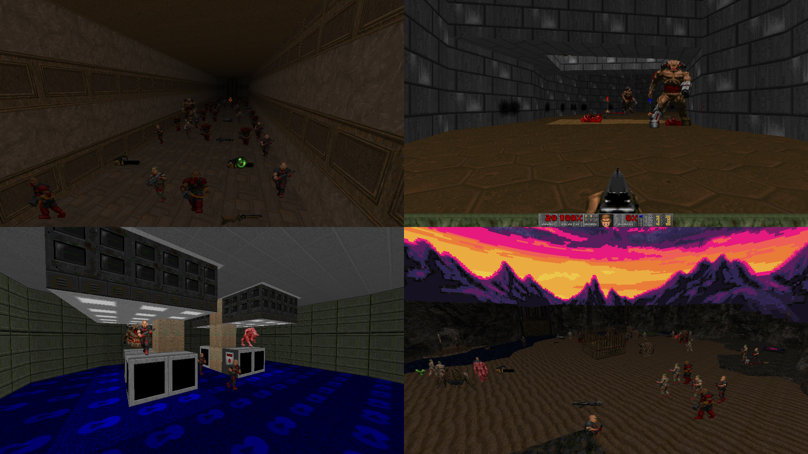

| Year | 2020 |
| IWAD | Any commercial Doom IWAD |
| Source port | GZDoom |
| Game mode(s) | N/A |
| Map(s) | N/A |
Vandomizer is a vanilla randomizer mod for the commercial Doom games powered by GZDoom. The mod randomizes the placements of the existing Doom things in maps without adding any extra enemies or items, hence the term “vanilla randomizer”.
Vandomizer offers three different randomization modes with varying degrees of insanity. The least chaotic one randomizes enemies and ammo pickups on a “tier”-based system, whereas the most chaotic one randomizes everything with no restrictions.